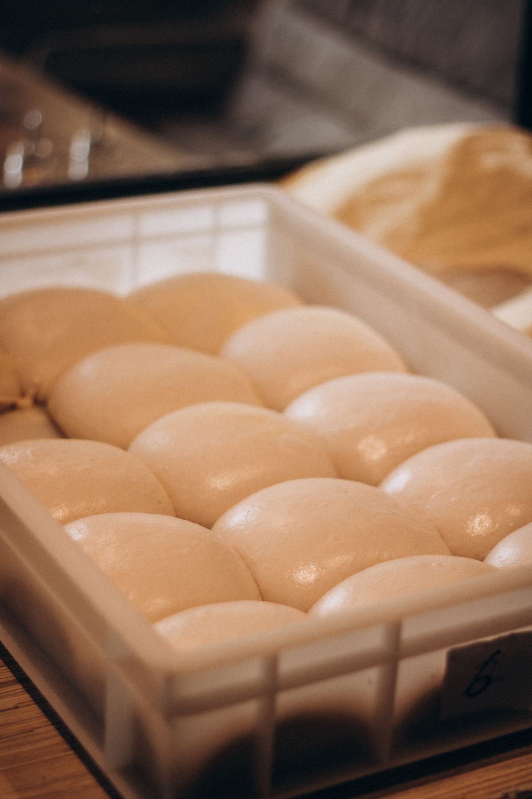

Le four à convoyeur — ou four tunnel — divise le métier en deux camps. Les uns y voient une trahison de la pizza artisanale, les autres l'outil qui a rendu possible la livraison à grande échelle. Les deux ont raison. Ce qui compte, c'est de savoir précisément ce qu'il vous apporte, ce qu'il vous coûte en typicité, et si votre modèle économique s'en accommode.
Un tapis métallique traverse une chambre chauffée par air pulsé. Vous réglez deux paramètres — la température et la vitesse — et le four fait le reste.
Des buses soufflent de l'air chaud au-dessus et en dessous du tapis. La cuisson est enveloppante et douce, très différente du choc thermique d'une sole réfractaire brûlante.
La vitesse du tapis fixe la durée de cuisson au dixième de minute près. Une fois le réglage trouvé, la 300e pizza est identique à la première — c'est toute la promesse du tunnel.
Pas de pelle, pas de rotation, pas de coup d'œil. L'opérateur pose et récupère. Il peut garnir la suivante pendant la cuisson, ce qui change complètement l'organisation du poste.
Recruter et fidéliser un pizzaïolo expérimenté est devenu difficile partout en France. Un four à sole exige des semaines d'apprentissage : gestion des zones chaudes, lecture de la coloration, rythme d'enfournement. Un tunnel supprime cette dépendance. Un équipier formé en une matinée sort le même produit que le responsable, y compris un dimanche soir à 22 h.
Masse salariale allégée, absence d'aléa lié aux congés ou au turnover, produit standardisé sur plusieurs points de vente. C'est l'équation qui a fait du convoyeur le standard des enseignes de livraison et des chaînes : la reproductibilité prime sur la signature. Pour une pizzeria artisanale, ce raisonnement s'inverse — voyez plutôt notre page four électrique ou le comparatif quel four à pizza choisir.
C'est la largeur du tapis qui fixe le débit, bien plus que la puissance. Une largeur trop juste vous plafonne dès la première grosse soirée.
30 à 50 pizzas de 30 cm par heure. Format compact, adapté à un corner, une boulangerie qui ajoute la pizza à sa carte ou un petit point de livraison.
60 à 100 pizzas par heure, deux pizzas de front. C'est le format le plus vendu : il couvre un vrai volume de livraison sans exiger une cuisine industrielle.
Au-delà de 120 pizzas par heure. Réservé aux gros débits, avec l'encombrement et l'extraction qui vont avec.
Deux ou trois tunnels empilés sur un même support : on double ou triple la cadence sans prendre un centimètre de plus au sol, et on peut régler des cuissons différentes par étage.
Le client ne voit pas le four et juge sur la constance. Un tunnel absorbe les pics du vendredi soir sans que la qualité décroche à la trentième commande, et permet de tenir des délais annoncés.
Même réglage, même sortie, quel que soit le point de vente. C'est ce qui rend une charte produit tenable sur vingt établissements, et ce qu'aucun four à sole ne garantit.
Production en série sur un créneau court, personnel polyvalent, traçabilité simple des températures. Le tunnel coche toutes les cases d'une cuisine de collectivité.
Un tunnel est long. À la longueur de la chambre s'ajoutent les tables d'entrée et de sortie, plus 40 à 60 cm de dégagement de chaque côté pour la ventilation et la maintenance. Comptez souvent 2,20 à 2,80 m de linéaire utile, alors qu'un four à chambres tient sur un mètre. Dans une cuisine étroite, c'est parfois rédhibitoire — le four rotatif offre alors une cadence comparable sur une emprise plus compacte.
Ouvert aux deux extrémités, le tunnel rejette chaleur et vapeurs en continu, davantage qu'un four à chambres fermées. Il faut une hotte couvrant les deux bouches, un débit dimensionné pour le modèle et une amenée d'air neuf compensée. Sans cela, la cuisine devient invivable et le personnel décroche. Les points à faire chiffrer sont détaillés dans notre guide installation et extraction.
Aucun matériel n'est bon partout. Voici ce que le convoyeur ne saura pas faire, quel que soit le budget.
Sans contact prolongé sur une sole très chaude, pas de fond réellement croustillant ni de cornicione alvéolé et taché. Le produit est bon, régulier, mais lisse. Une napolitaine authentique est hors de portée : elle demande 450 °C et 90 secondes, ce qu'aucun tunnel ne fait. Les plages de cuisson comparées sont détaillées dans notre guide températures et cuisson.
Le réglage vaut pour toutes les pizzas qui passent. Une pâte plus épaisse, une garniture très humide, une calzone : il faudrait changer la vitesse, donc décaler tout le flux. Le tunnel impose une carte homogène et une pâte constante — ce qui suppose au passage un pétrin régulier et un protocole de pousse rigoureux.
Fourchettes hors taxes sur du matériel neuf, hors hotte, tables d'entrée/sortie et raccordement.
| Configuration | Largeur de tapis | Cadence indicative | Prix HT |
|---|---|---|---|
| Tunnel compact | 40 cm | 30 – 50 pizzas/h | 8 000 – 12 000 € |
| Tunnel standard | 50 – 65 cm | 60 – 100 pizzas/h | 11 000 – 17 000 € |
| Tunnel large | 80 cm | 120 pizzas/h et + | 16 000 – 22 000 € |
| Double module superposé | 50 – 65 cm × 2 | 120 – 200 pizzas/h | 19 000 – 25 000 € |
| Support, tables et hotte dédiée | — | — | 1 500 – 5 000 € |
Soit 8 000 à 25 000 € HT pour le four : plus cher qu'un électrique à chambres, moins qu'un rotatif de gros diamètre. Le calcul se fait rarement sur le prix d'achat seul : c'est l'économie de main-d'œuvre qualifiée qui décide. Repères complets dans le guide des prix.
Volume visé, place disponible, extraction existante : dites-nous tout, on fait chiffrer sous 24 h.